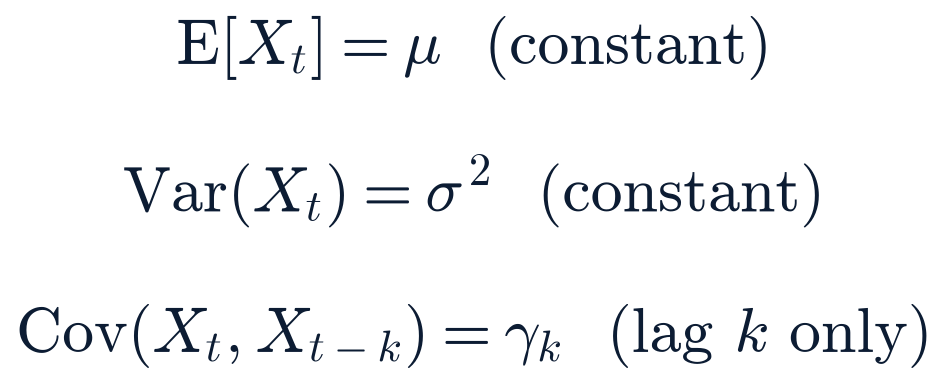

Pre-market — NYSE opens 9:30 ET (regular full session, no holiday/early close)
2 sources unavailable this run — see System health.
Data freshness by source · Thursday, Aug 6, 2026
Source
Freshness label
Data age
Index futures / commodities / FX (Yahoo Finance, close-series method)
Delayed (+10 min)
~10 min
Equity watchlist (167 symbols; 166 recovered)
Previous close (2026-08-05)
1 session
Treasury par yield curve
EOD official (2026-08-05)
1 session
FRED (CPI, PAYEMS, rates series)
EOD official
varies by series
Cboe VIX complex
Previous close (2026-08-05)
1 session (index does not trade after hours)
Frankfurter FX (ECB reference)
EOD official (2026-08-05 fix)
1 session
CoinGecko crypto
Live
<5 min
FINRA daily short volume
EOD official (2026-08-05 session)
1 session (T+1 publication lag)
Whole-market breadth (Massive grouped daily)
EOD official (2026-08-05 session)
1 session
SEC EDGAR 8-K feeds (market-wide + 90-ticker sweep)
Live
<1 hr
Section 2Top Stories
Materially changedConfirmed — multiple sources
SpaceX's ~$116B share-lockup expires today, unlocking the first insider tranche, as the stock opens near a fresh post-IPO low
Event today, Aug 6 · Reported Aug 5–6 · Last checked 05:55 ET
What happened
SpaceX's (Nasdaq: SPCX) post-IPO lockup expires today, releasing the first tranche (up to 20%) of roughly 911.5 million insider shares — about $101.6B notional at recent pre-market prices — in a staggered release schedule that continues through December; this is not a single all-at-once unlock. Elon Musk's 6.4 billion shares remain locked separately until June 12, 2027. The stock enters the day already at a fresh post-IPO low: Wednesday's close was $108.27 (−13.61%), extending Tuesday night's post-earnings selloff into a second full session and putting SPCX roughly 24% below Tuesday's pre-earnings close and about 17% below its June IPO price. Pre-market quotes (this report's own Yahoo Finance snapshot, non-consolidated) show the stock around $111–112 ahead of the open.
Why it matters
This is the first real test of insider supply meeting the float since SpaceX's June 12 IPO, arriving on the heels of Tuesday's capex-driven earnings selloff rather than from a position of strength.
What is confirmed
The lockup date, the ~20%-first-tranche staggered structure, and Musk's separate 2027 lock-up date, per Forbes, Motley Fool, and Yahoo Finance/Morgan Stanley coverage. This run's own Yahoo Finance close-series fetch confirms Wednesday's −13.61% close.
What remains uncertain
The actual increase in tradeable float will likely be well below the full 911.5M-share ceiling, since not every eligible holder sells immediately — multiple outlets caution against reading today's price action as a clean "lockup bottom." No company statement confirming or denying insider selling plans has been found.
Context
Morgan Stanley reiterated a bullish rating via a note cited by Yahoo Finance, arguing fundamentals are "largely unchanged" and calling current levels an attractive entry; this sits alongside two consecutive sharp down-sessions this report has tracked since Tuesday's print. A standing forecast (2026-08-05-pm-1) tracks whether SPCX moves more than ±5% specifically today.
Impact
Markets/companies: SPCX directly; read-through to space-sector peers (RKLB, ASTS, LUNR, RDW) and the broader AI-capex trade this report has tracked all week (NVDA, AVGO, VRT, CEG, VST).
What happens next
Today's opening print and volume are the first genuine read on insider-supply absorption; this report will update in the Closing Brief.
Related assets (exposure ≠ direction)
SPCX, RKLB, ASTS, LUNR, RDW, VOYG
Sources: Forbes, Motley Fool, Yahoo Finance/Morgan Stanley note, DayTradingToolkit · this run's own Yahoo Finance close-series data (primary, this report's data).
Expanded analysis (collapsed by default)
The space-sector watchlist diverged sharply on Wednesday even as SPCX fell further: VOYG (+3.70%), KRMN (+2.09%), RDW (+0.85%, on record Q2 revenue — see Business & Corporate) and RKLB (+0.46%) all advanced, while SPIR (−4.30%), VSAT (−5.95%) and YSS (−14.11%, the sector's worst performer alongside SPCX) fell hard — a genuinely mixed session rather than a uniform sector selloff tracking SPCX down. That divergence argues against treating today's lockup purely as a sector-wide catalyst; it may remain a largely SPCX-specific event.
ContinuingConfirmed — multiple sources
Google names Koray Kavukcuoglu SVP of DeepMind as Hassabis moves to Chair; Jeff Dean's "Discovery Loop" startup confirmed, Google-backed
Event/published Aug 5 · Last checked 06:00 ET
What happened
Details firmed up on Tuesday's leadership reshuffle: Koray Kavukcuoglu, a 13-year DeepMind veteran who built the deep-learning team behind WaveNet and DQN, has been named SVP of Google DeepMind, reporting directly to Sundar Pichai and overseeing Gemini development, frontier research, and developer ecosystems. Demis Hassabis moves to Chair of Google DeepMind plus a new Chief Scientist of Alphabet role, while continuing to lead Isomorphic Labs. Jeff Dean and Sanjay Ghemawat are confirmed departing to co-found a new startup, "Discovery Loop," alongside Oriol Vinyals and Quoc Le; the departure is described as amicable, with Google reportedly investing in the new venture.
Why it matters
This is a full leadership transition at the center of Google's AI effort, not a single resignation — both DeepMind's operational leadership and its chief-scientist function are changing hands in the same week Alphabet disclosed its first-ever negative free-cash-flow quarter on raised $195–205B capex guidance.
What is confirmed
Kavukcuoglu's title and reporting line, Hassabis's new dual role, and the Discovery Loop founding team, per CNBC, Axios, 9to5Google, the-decoder.com, and multiple other outlets. Pichai framed the move as accelerating AGI progress, citing Gemini's 950M+ monthly users; Hassabis said AGI is "close at hand."
What remains uncertain
No further departures or additional analyst rating actions were found overnight beyond GOOGL's already-captured −4.03% Wednesday close. The scale of Google's investment in Discovery Loop has not been independently sized.
Context
First reported in Wednesday's Closing Brief as the top story of that cycle; this run adds the confirmed successor title and startup details that were still developing at that cutoff.
Impact
Companies/tech: GOOGL directly; broader read-through to how markets price AI-lab leadership stability heading into a heavy capex cycle.
What happens next
Watch for GOOGL's reaction at today's open and any further executive or organizational detail from Google's own channels.
Iran and Oman edge toward a Hormuz shipping-corridor deal as Houthis claim a separate Gulf of Aden tanker strike
Ongoing · Latest remarks Aug 5–6 · Last checked 06:00 ET
What happened
Iran and Oman are reported "close" to finalizing a Hormuz shipping-corridor framework; Iran's deputy foreign minister cautioned any deal would not automatically reopen the strait, and a senior Gulf official told CNN the odds of a deal landing by Friday are roughly 50-50 (single-reliable-source on the specific odds figure). President Trump said "a lot of progress" has been made and suggested an announcement "could come soon." Iran continues publicly denying direct US talks — its fifth consecutive day of that denial — insisting discussions are "strictly bilateral" with Oman. Separately, Houthi forces claimed a missile strike on a Saudi oil tanker in the Gulf of Aden around Aug 5, forcing it to turn back; this is a distinct waterway from the Strait of Hormuz tanker-incident series this report has tracked, and the claim is self-sourced by the Houthis with no independent confirmation of damage found. No fifth Strait of Hormuz-area vessel incident (beyond the Minoan Pioneer, treated as the fourth) was found in this run's research.
Why it matters
A near-term deal on the corridor, if it lands, would be the most concrete de-escalation step in a story this report has tracked since July 30; the Houthi claim, if corroborated, would open a second active maritime-security front distinct from the Hormuz series.
What is confirmed
Both governments' public statements on the corridor talks and Iran's continued denial, per CNN's Aug 6 live blog, Al Jazeera, CBS News, and ABC News. The Houthi self-claim itself is confirmed as having been made; the underlying strike and any damage are not independently confirmed.
What remains uncertain
Whether any deal actually lands by Friday, and whether the Houthi Gulf of Aden claim is accurate or exaggerated — this report labels it Single-reliable-source pending corroboration.
Context
This is the same coordinate-finalization thread this report has tracked since Iran and Oman finalized geographic coordinates for the corridor in the last cycle; Trump separately reiterated Iran will be "hit very hard" if the strait is not opened soon.
Impact
Energy/markets: WTI crude was little-changed overnight (see Premarket Setup); this report does not assert a confirmed catalyst link between either development and the current oil price.
What happens next
Watch for a confirmed deal announcement or joint statement by Friday, and for any independent corroboration of the Gulf of Aden claim.
Related assets (exposure ≠ direction)
CL=F, XLE, defense names
Sources: CNN (Aug 6 live blog), Al Jazeera, CBS News, ABC News.
Materially changedConfirmed — multiple sources
Todd Blanche's AG nomination heads to a Friday floor vote and Saturday confirmation vote, with two GOP senators still undecided
Reported Aug 5 · Last checked 06:00 ET
What happened
Majority Leader Thune plans to file cloture Wednesday, setting up a first floor vote Friday (Aug 7) and a final confirmation vote Saturday (Aug 8) — both before the Senate's Aug 10 recess target. Sens. Murkowski and Cassidy remain publicly uncommitted; Murkowski is declining to discuss the nomination further. Sen. Collins's "no" position, announced Aug 4, is unchanged. Sens. Cornyn and Tillis, who had threatened opposition, voted yes in committee after Blanche agreed to rescind the DOJ "Anti-Weaponization Fund."
Why it matters
With a schedule now set, the nomination's fate will be resolved within roughly 48 hours; the math remains exactly as tight as this report has tracked since Collins's announcement — one more GOP defection fails it, absent a Democratic crossover or a VP tiebreak (the exact tiebreak threshold has two competing framings in press coverage this report has not fully reconciled against a primary source).
What is confirmed
The Friday/Saturday vote schedule and both undecided senators' positions, per CNN, Alaska's News Source, The Hill, and Forbes.
What remains uncertain
How Murkowski and Cassidy will ultimately vote; no whip count or public commitment from either has been found.
Context
This report has tracked the nomination since the fund's rescission cleared Cornyn's objection (Aug 3) and the committee's 12-10 party-line vote (Aug 4).
Impact
Policy/people: DOJ leadership succession; limited direct market relevance.
What happens next
Friday's cloture/floor vote is the next concrete checkpoint; a standing forecast (2026-08-05-am-2, horizon Aug 10) tracks failure risk.
Related assets (exposure ≠ direction)
—
Sources: CNN, Alaska's News Source, The Hill, Forbes.
Materially changedConfirmed — multiple sources
Kyiv missile/drone barrage toll settles at 17 killed as reporting converges on the attack's scale
Event overnight Aug 4–5 · Last checked 06:00 ET
What happened
Multiple major outlets (Washington Post, Kyiv Independent, CNN, NPR, Al Jazeera, ABC, Meduza) now converge on 17 killed from the overnight barrage on Kyiv and the surrounding region, up from "at least 15" as of Tuesday's cycle. Wounded figures vary slightly by outlet (44 per WaPo/ABC vs. 48 per UPI), a detail that remains unreconciled. The attack composition is reported as roughly 24 Iskander-M ballistic missiles plus a small number of Zircon/Onyx missiles and 115-plus Shahed-type drones; Ukraine reportedly intercepted zero of the ballistic/anti-ship component, per CNN and NPR. No new large-scale overnight strike (Aug 5–6) was found in this run's research.
Why it matters
The toll has settled at a level clearly higher than earlier reporting, confirming this as one of the more severe single strikes on Kyiv this report has tracked, even as no further escalation occurred overnight.
What is confirmed
The 17-killed figure across independent outlets and the missile/drone composition figures.
What remains uncertain
The exact wounded count (44 vs. 48); whether the reported zero-interception rate for ballistic missiles holds up against a primary Ukrainian Air Force statement, which this report has not independently verified.
Context
This follows the Poland missile-incursion story tracked since July 30; NATO's Article 4 window over that incident passed without invocation and remains unconnected to last night's barrage.
Impact
People/security is the primary dimension; no confirmed direct market reaction is attributed to this specific event (gold's overnight rally, see Premarket Setup, is not asserted to be caused by it).
What happens next
This report will note if the toll moves again in the Closing Brief; no further overnight strike has been reported as of this cutoff.
Sources: Washington Post, Kyiv Independent, CNN, NPR, Al Jazeera, ABC, Meduza, Bloomberg, CNBC.
Materially changedConfirmed — multiple
A federal circuit split emerges on Trump's mail-ballot executive order as the Supreme Court's stay application remains pending
Ongoing · Latest development Aug 4 · Last checked 06:00 ET
What happened
The 23-state-plus-D.C. coalition's response to the emergency stay application — opposing a stay and arguing the executive order intrudes on state election authority, citing the Purcell principle — was filed by Justice Jackson's Aug 3 deadline, per SCOTUSblog. As of this run, no ruling has issued from Jackson or the full Court. Separately, and adding complexity for the eventual ruling: a D.C. Circuit three-judge panel declined Tuesday (Aug 4) to block the executive order in a related case, upholding a lower court's May ruling that an injunction was premature, while another appellate panel reportedly reached the opposite conclusion over the weekend — a genuine circuit split now feeding into the emergency application.
Why it matters
A circuit split increases the odds the Supreme Court treats this as requiring a substantive ruling rather than a narrow procedural stay decision.
What is confirmed
The states' filing and the D.C. Circuit panel's Tuesday ruling, per SCOTUSblog, Democracy Docket, and WHYY.
What remains uncertain
No ruling has issued yet on the stay application itself; commentary continues to suggest the Court "could act later this month," not independently confirmed by this report.
Context
This report has tracked the underlying executive order and its legal challenges since late July; all sides reportedly agree implementation would not occur in time for the 2026 election cycle regardless of the stay's outcome.
Impact
Policy/legal: primary dimension; no direct market linkage.
What happens next
Watch for a ruling from Justice Jackson or the full Court.
Related assets (exposure ≠ direction)
—
Sources: SCOTUSblog, Democracy Docket, WHYY.
NewConfirmed — multiple sources
Abdul El-Sayed narrowly wins Michigan's Democratic Senate primary over Rep. Haley Stevens
Event/called Wed morning, Aug 5 · Last checked 06:00 ET
What happened
Abdul El-Sayed defeated Rep. Haley Stevens in Michigan's Democratic Senate primary; the Associated Press called the race Wednesday morning at 48.5%–47.5% with 99% of votes counted — a notably close, progressive-vs-establishment result. El-Sayed advances to face former Rep. Mike Rogers (R) in November.
Why it matters
This is the first Top-Stories-level election result this report has carried, and a close progressive-primary win in a swing state is a data point on intra-party dynamics heading into the midterm cycle.
What is confirmed
The AP call and vote margin, per Washington Post, CNBC, NBC News, and Ballotpedia.
What remains uncertain
Whether the 1-point margin holds through any final certification; no recount has been reported as of this cutoff.
Context
The seat is open; this is the first cycle this report has covered a Michigan statewide primary result.
Impact
Politics: no direct market linkage.
What happens next
General election campaign against Mike Rogers begins; no debate schedule found yet.
Related assets (exposure ≠ direction)
—
Sources: Washington Post, CNBC, NBC News, Ballotpedia.
EU ministers voice "solidarity" with Spain on Ceuta but reach no binding deal as the migrant death toll dispute widens further
Meeting Aug 5 · Last checked 06:00 ET
What happened
EU interior ministers described their Ceuta meeting as "constructive," expressing "full solidarity" with Spain and ruling out secondary migrant movement into the EU, while agreeing the Schengen zone was never genuinely at risk — but no binding agreement, reparations mechanism, or burden-sharing plan was reported. The death toll dispute has widened further: Spain's own count sits around 72–88 depending on outlet and date, Morocco's Interior Ministry counts only 11 (deaths en route only), and the Moroccan Association for Human Rights (an NGO, uncorroborated) estimates roughly 130 with dozens still missing — no single authoritative figure has emerged across four-plus estimates.
Why it matters
The combination of a diplomatic statement of unity without a substantive resolution mechanism, alongside a toll dispute that keeps widening rather than narrowing, signals this crisis is not moving toward closure.
What is confirmed
The meeting occurred and its "solidarity" framing, per an AOL/Reuters wire report, Euronews, RTE, and eurotopics.net. Italy's Schengen suspension with Spain was not reported as lifted.
What remains uncertain
The actual death toll; a standing forecast (2026-08-03-pm-3, horizon Aug 10, reconciliation to a single figure) is trending wrong as the dispute widens rather than narrows.
Context
This report has tracked the crisis since Aug 3; Italy's Schengen-free-travel suspension with Spain and France's split from a 22-country hardline letter remain standing context.
Impact
Policy/people: EU migration policy and Spain-Morocco relations; no direct market linkage.
What happens next
Watch for any follow-up EU statement addressing the toll discrepancy directly.
Related assets (exposure ≠ direction)
—
Sources: AOL/Reuters wire, Euronews, RTE, eurotopics.net, Türkiye Today, The Journal, Taipei Times.
DRC Ebola outbreak's confirmed toll holds at 1,707 deaths as a newer, unverified figure points higher
Ongoing · Confirmed figures published Aug 4 · Last checked 06:00 ET
What happened
This report's last independently confirmed WHO-sourced figures (Aug 4) remain 3,802 cases / 1,707 deaths, already the largest Ebola outbreak ever recorded in the DRC, with nearly 80% of new cases now community-spread rather than contact-traced. This run's research surfaced a higher, inconsistently-sourced figure (roughly 3,874 cases / 1,751 deaths) from an AI-summarized search result with a garbled date attribution and a WHO page that returned a fetch error; this report labels the higher figure Preliminary/Unverified and continues to report 3,802/1,707 as its confirmed baseline pending a clean primary-source check.
Why it matters
Whichever figure is accurate, the trend (rising toll, rising community-spread share) is consistent and concerning; the specific magnitude of the latest increase is what remains unconfirmed.
What is confirmed
3,802 cases / 1,707 deaths as of Aug 4, per WHO Disease Outbreak News (via press) and press corroboration (Al Jazeera, The Hill, UN News).
What remains uncertain
Whether the toll has risen further since Aug 4, and by how much; this report will attempt a direct WHO DON re-check in the Closing Brief.
Context
Ituri province remains roughly 88–90% of the total burden; the IHR Emergency Committee is scheduled to meet Aug 18.
Impact
Public health: primary dimension; no direct market linkage.
What happens next
Next WHO situation report; this report's own re-check planned for the Closing Brief.
Related assets (exposure ≠ direction)
—
Sources: WHO Disease Outbreak News (primary, via press, Aug 4), Al Jazeera, The Hill, UN News.
ContinuingConfirmed — multiple
Spokane-area wildfire complex reaches its first containment as some evacuations ease; arson suspect due in court today
Ongoing since Aug 1 · Latest update Aug 5 · Last checked 06:00 ET
What happened
The Spokane County, WA fire complex reached its first real containment progress: the Old Trails Fire (3,621 acres) and Autumn Lane Fire (5,869 acres) both reached 13% containment, and the Fairview Fire reached 5%, for a combined roughly 10,546 acres. Evacuations were lifted Wednesday afternoon (3:57 PM PT) for the area from Carstens west to Wood Rd east, Prewett Rd south, and the Spokane River north. Aaron Farinacci, 37, charged with first-degree arson for the Old Trails Fire and held on $1M bond, has an arraignment/plea hearing scheduled for today; the outcome was not yet available as of this report's cutoff. Heat is forecast to climb into the upper 90s (Fahrenheit) later this week with lower humidity — a fresh risk factor for continued fire spread.
Why it matters
This is the first containment progress this report has recorded since the fire began, though the acreage figure (~10,546) is notably higher than the 8,026-acre figure this report cited Wednesday morning — likely reflecting updated mapping across all three named fires rather than new growth alone; this report has not reconciled the two figures against a single source and flags the discrepancy.
What is confirmed
The containment percentages, evacuation-zone easing, and today's scheduled arraignment, per MyNorthwest, Washington Times, and KHQ.
What remains uncertain
The reconciled total acreage figure; the arraignment's outcome (not yet occurred as of cutoff).
Context
First reported in Monday's Morning Brief; roughly 65,000 people evacuated and 700+ structures destroyed remain the standing totals from earlier reporting.
Impact
People/property: primary dimension.
What happens next
Watch for today's arraignment outcome and further containment updates as the heat wave arrives.
Related assets (exposure ≠ direction)
—
Sources: MyNorthwest, Washington Times, KHQ, NPR, CNN, PBS NewsHour.
Section 3 · the two-minute versionTwo-Minute Executive Brief
The world A dense but largely continuing-not-escalating overnight: the Kyiv barrage toll settled at 17 killed with no new overnight strike; Iran and Oman inch toward a Hormuz corridor deal (50-50 odds by Friday, per one Gulf official) even as Iran holds its US-talks denial and Houthis claim a separate Gulf of Aden tanker strike; a federal circuit split complicates the pending SCOTUS mail-ballot ruling; the Ceuta migrant crisis and DRC Ebola outbreak both continue without resolution; and Michigan Democrats picked Abdul El-Sayed in a 1-point primary.
Markets A quiet-to-mixed premarket tape after Wednesday's narrow, mixed session (S&P −0.17% to 7,723.42, Dow +0.49% to a fresh record 54,349.00, Nasdaq −0.83%, Russell −0.59%): ES and YM are modestly higher, NQ and RTY roughly flat-to-lower, gold is up another sharp 2.2% overnight (its second big move in two sessions), copper is up 1.8%, and VIX closed Wednesday at 15.81 after an intraday round-trip as high as 18.43. SpaceX's lockup expiration and today's CEG/BKSY/ABNB earnings are the session's key single-name catalysts.
Central theme Several stories this report has tracked all week (Blanche's nomination, the Hormuz corridor talks, SpaceX's post-earnings selloff) are converging on concrete near-term resolution points — Friday/Saturday for Blanche, Friday for a possible Hormuz deal, today for the SpaceX lockup — after days of open-ended tracking.
Most important new development Blanche's AG nomination now has a firm floor-vote schedule (Friday cloture/vote, Saturday confirmation).
Most important risk Any of the multiple live Iran-adjacent threads (Hormuz deal collapse, a confirmed new tanker incident, or escalation of the Houthi Gulf of Aden claim) could move oil and risk sentiment with little warning.
Most important positive development The Kyiv barrage toll held at 17 with no further overnight escalation, and Spokane's wildfire complex recorded its first containment progress.
Key unknown Whether SpaceX's lockup expiration produces genuine new insider selling pressure at today's open or proves to be a largely priced-in, already-discounted event.
Deserves attention today
Constellation Energy (CEG) and BlackSky (BKSY) earnings before the open; Airbnb (ABNB) reports after close today (5:00 PM ET webcast).
08:30 ET — Productivity and Costs, Q2 2026 preliminary.
SpaceX (SPCX) share-lockup expiration and today's cash-session open/volume.
Section 4Since Yesterday’s Close
Material updateBlanche AG nomination
Previous understanding: nomination cleared committee 12-10 with no floor date set. → New information: a Friday (Aug 7) cloture/floor vote and Saturday (Aug 8) confirmation vote are now scheduled. → Why it matters: the timeline for resolution is now concrete, within 48 hours of this report. Current confidence: high.
New since closeMichigan Senate Democratic primary
Previous understanding: not previously tracked. → New information: Abdul El-Sayed defeated Rep. Haley Stevens 48.5%–47.5%. → Why it matters: first statewide primary result this report has covered this cycle. Current confidence: high.
Material updateKyiv missile/drone barrage toll
Previous understanding: at least 15 killed, still settling. → New information: toll has settled at 17 across multiple independent outlets. → Why it matters: confirms the barrage's severity; no further overnight escalation. Current confidence: high.
Material updateSCOTUS mail-ballot EO stay application
Previous understanding: states' response filed by the Aug 3 deadline, no ruling yet. → New information: a D.C. Circuit panel declined Tuesday to block the EO while another panel reportedly reached the opposite conclusion, creating a circuit split feeding the pending application. → Why it matters: increases the odds of a substantive rather than narrow procedural ruling. Current confidence: medium-high (SCOTUSblog, Democracy Docket).
No material changeIran-linked water-utility cyberattacks
Scope still described as 12+ states; no new state named, no formal federal attribution statement, and the prior single-sourced Minnesota operational-impact claim remains uncorroborated. Still on watch.
No material changeGaza disarmament sequencing
Board of Peace envoy Mladenov held "constructive and detailed" talks with Netanyahu; the core no-withdrawal-before-disarmament deadlock is unchanged. Still on watch.
Section 5Overnight World Developments
The Kyiv barrage and the Iran/Hormuz/Houthi threads are covered in Top Stories. Gaza's Board of Peace held "constructive and detailed" implementation talks between envoy Nikolay Mladenov and Prime Minister Netanyahu on Aug 5, per Religion News Service and Al Jazeera; Israel has still not publicly agreed to the latest Hamas-Board of Peace disarmament document, and Hamas continues to condition disarmament on an Israeli withdrawal — a meeting occurred but the underlying sequencing deadlock this report has tracked since July 30 is unresolved. Kumamoto, Japan's earthquake death toll continues to hold at 38, with no change since this report's last check; a new complication is extreme heat combined with damaged water/power infrastructure raising the risk of further deaths from heatstroke or dehydration among the 8,200-plus people still evacuated (single-reliable-source on the specific heat-risk warning, per NewsOnJapan). Greece's wildfires near Athens and Kefalonia show no fresh escalation since this report's last check (roughly 10,000 hectares burned, 3 firefighter and 2 helicopter-crash deaths reported over the prior weekend). A magnitude-6.4 earthquake struck off Sarangani, Davao Occidental in the Philippines at 04:13 UTC Aug 5 (before this report's prior cutoff); Phivolcs confirmed no tsunami threat and no significant damage or casualties, classifying it as an aftershock of the June 8 M7.8 Maasim quake.
Indonesia ferry fire: no updated toll found
No reporting newer than Aug 3–4 was found on the Mutiara Sentosa 2 ferry fire; the standing figures remain 5 confirmed dead and 41 unaccounted for (271 aboard per the manifest, with discrepancies complicating the exact count), cause still under investigation (possibly a truck fire on the vehicle deck). This is a negative result — nothing new since the last edition.
Section 6US Politics & Government
The Blanche AG nomination schedule, the SCOTUS mail-ballot circuit split, and the Michigan primary are covered in Top Stories. The NDAA FY2027 remains blocked in the Senate with no new cloture attempt or floor action found since its prior party-line cloture failure; Sen. Duckworth's Iran-war-funding amendment has not been incorporated and no fresh vote appears scheduled — a negative result, status unchanged. On AI policy: a bipartisan House "FRONTIER Act" (Reps. Obernolte and Trahan, plus Franklin, Peters, Houchin, and Subramanyan) establishing tiered transparency, audit, and incident-reporting requirements for frontier AI developers was introduced July 23; separately, Senate Majority Leader Thune and Sen. Klobuchar are reportedly discussing a "duty of care" framework per Washington Post and Fortune reporting dated Aug 3. Both of these predate this report's Aug 5 cutoff, so this represents renewed activity on a thread this report's story ledger had marked "Faded" as of an earlier snapshot rather than genuinely new overnight news — flagged for editorial reconciliation against the exact prior-status timeline. The Minnesota prediction-market ban remains blocked by U.S. District Judge Katherine Menendez's preliminary injunction, with no new appeal or litigation development found — status unchanged, a negative result.
Section 7Geopolitics
The Kyiv barrage, Iran/Hormuz/Houthi threads, and Gaza talks are covered above. No additional major geopolitical development beyond those threads was identified in this run's research window; this is a negative result for any story not already covered in Top Stories or Section 5.
Section 8Economics & Central Banks
No headline US economic data released overnight. FRED's reference series show the following as of their latest available observations: 10Y Treasury real yield (DFII10) 2.40% (Aug 4, down from 2.43% Aug 3); 10Y breakeven inflation (T10YIE) 2.22% (Aug 5, down from 2.23% Aug 4); SOFR 3.66% (Aug 4, up 1bp from 3.65%); high-yield credit spreads (ICE BofA OAS, BAMLH0A0HYM2) 2.73% (Aug 4, continuing the tightening trend this report has tracked, down from 2.78% Aug 3 and 2.85% Jul 31). Headline CPI (CPIAUCSL) was last 332.568 for June, and core CPI (CPILFESL) actually ticked down to 336.065 in June from 336.121 in May — a small month-over-month decline in the core index level worth flagging, though this report notes a single monthly index-level move is not itself a reliable disinflation signal; the next CPI print (July data) is due Aug 12. Weekly initial jobless claims (ICSA) were last 197,000 for the week ending Jul 25, up from 188,000 the week prior. No FOMC meeting is scheduled until September.
Week-ahead data watch Preview — not yet released
Thu Aug 6, 08:30 ET
Productivity and Costs, Q2 2026 (preliminary)
Fri Aug 7, 08:30 ET
Critical Employment Situation, July 2026 (nonfarm payrolls, unemployment rate, wages) — this week's only Critical-tier release, the cleanest labor-market read ahead of the September FOMC meeting. This report has no independently verified forward consensus figure to cite.
Tue Aug 12, 08:30 ET
Consumer Price Index, July 2026, and Real Earnings, July 2026
Section 9Business & Corporate
SpaceX's lockup expiration and the Google/DeepMind reshuffle are covered in Top Stories. Today's confirmed-multiple earnings (Finnhub day-of confirmations, cross-checked against this run's own research): Constellation Energy (CEG, before open, consensus EPS $2.45), BlackSky (BKSY, before open, consensus EPS −$0.40 on ~$31.3M revenue), and Airbnb (ABNB, after today's close, 5:00 PM ET webcast, consensus EPS roughly $1.20 (+16.5% YoY) on ~$3.58B revenue (+15.6% YoY)) — independently confirmed by StockTitan, Investing.com, Nasdaq, and Unusual Whales. ConocoPhillips (COP) and Datadog (DDOG) are also slated to report before today's open per secondary calendar sources, not yet independently confirmed via Finnhub/Alpha Vantage in this run. Alpha Vantage's earnings-calendar endpoint returned a malformed, apparently rate-limited response this run (see System health); Finnhub's day-of feed was used as the primary calendar source today, a downgrade from the normal two-source cross-check.
This run's targeted SEC EDGAR sweep (90-ticker company watchlist, all filings since the prior run's Aug 5 20:25 UTC checkpoint) found three new 8-Ks: Redwire (RDW) filed its Q2 2026 results (Item 2.02) — record quarterly revenue of $117.1M (+89.6% YoY), gross margin improved to 27.8% from −30.9% a year ago, net loss narrowed by $56.0M YoY to $(41.0)M, and backlog reached a record $542.1M; the release cites new Stalker Block 30 and Penguin UAS contract awards and a facility expansion in Huntsville, Alabama. AbbVie (ABBV) filed an Item 8.01 disclosing an Aug 4 underwriting agreement for a $10B multi-tranche senior notes offering (nine tranches from a floating-rate 2028 note through a 2066 note); no stated use of proceeds was found in the filing excerpt reviewed. Spire Global (SPIR) filed an Item 8.01 disclosing that an international arbitration tribunal issued a Final Award on Jul 31 dismissing NorthStar Earth & Space's ~$45.9M breach-of-contract claims in full and granting Spire's counterclaims, for a net payment of roughly $12.4M owed to Spire by NorthStar — the award is final and binding, though Spire states it cannot yet predict timing or amount of actual recovery.
Section 10Tech/AI/Cyber
The Google/DeepMind leadership transition is covered in Top Stories. The Iran-linked water-utility cyberattack campaign shows no material change since the last edition: scope remains described as 12-plus states, with no formally confirmed federal (CISA/FBI) attribution statement found — press coverage continues to link the activity to CyberAv3ngers (an IRGC-affiliated group) based on prior tactic/technique overlap rather than a fresh on-record confirmation, and the earlier single-sourced Minnesota operational-impact claim (pressure loss, flooding) remains uncorroborated by a second outlet in this run's research. No new CISA KEV catalog additions or notable CVE disclosures were found in the last 10–14 hours; the Cisco Secure FMC and VMware/Broadcom vulnerabilities this report has tracked remain in the same confirmed/unverified status as previously reported, and direct cisa.gov advisory fetches continue returning HTTP 403 (a recurring, known issue). Breach-tracker aggregator listings show several small/mid-size ransomware victims dated Aug 5, none rising to watchlist-relevant scale; this report labels these Single-reliable-source (aggregator listing only) and does not treat them as independently confirmed.
Section 11Science & Engineering
No confirmed new science or engineering development was found in this run's research window beyond the DRC Ebola outbreak's ongoing clinical-trial context (Top Stories: remdesivir and MBP134 trials continuing; an Oxford Phase 1 vaccine trial has been granted permission to proceed). Several general science-desk items surfaced in search (flatworm immune-cell research, magma-reservoir mapping in Tuscany, orexin-neuron motivation research, a Brazilian snake fossil, a posture/decision-making study) could not be confirmed as newly published within this report's Aug 5–6 window and are not reported as new; this is a negative result for confirmed breaking science news.
Section 12Space & Spaceflight
SpaceX's lockup expiration and Redwire's record Q2 earnings are covered in Top Stories and Business & Corporate. No orbital launch occurred between this report's prior cutoff and now — the most recent flight, SpaceX's Falcon 9/AST SpaceMobile BlueBird 11-13 mission from Cape Canaveral, flew before the prior cutoff. Today's calendar includes NASA's Spacewalk 96 (the first of three planned in August), with astronauts Jessica Meir and Anil Menon beginning around 12:35 ET (coverage from 11:00 ET) to install the ISS's seventh roll-out solar array, and Japan's H3-22 rocket carrying the Michibiki 7 / QZS-7 navigation satellite from Tanegashima (15:30 ET). Standing corporate context, not new since the last cutoff: Blue Origin has paused New Shepard flights to redirect resources toward lunar-lander development following the May 28 New Glenn booster explosion, and Rocket Lab's Neutron debut remains slated for late 2026.
Section 13Today’s Calendar
All times ET. Importance per SPEC §17, with reason in the row.
Time ET
Event
Importance
Notes
Before open
Constellation Energy (CEG) Q2 2026 earnings
Medium
Consensus EPS $2.45 on ~$8.03B revenue (Finnhub)
Before open
BlackSky (BKSY) Q2 2026 earnings
Medium
Consensus EPS −$0.40 on ~$31.3M revenue (Finnhub); Q1 missed badly
08:30
Productivity and Costs, Q2 2026 (preliminary)
Medium
—
Today
SpaceX (SPCX) share-lockup expiration
Critical
First ~20% insider tranche of a staggered release through December
Today
4-Week / 8-Week Treasury Bill auction
Low
Routine bill supply
12:35
ISS Spacewalk 96 (Meir & Menon, solar-array install)
Medium
Coverage begins 11:00 ET; first of three planned in August
As of 04:00–06:00 ET · futures/commodities/FX Delayed +10m (close-series method vs. Wednesday's settle) · VIX previous close · crypto Live.
Instrument
Level
Change
Label
ES (S&P futures)
7,760.00
+0.14%
Delayed +10m
NQ (Nasdaq futures)
29,486.00
−0.44%
Delayed +10m
YM (Dow futures)
54,650.00
+0.29%
Delayed +10m
RTY (Russell futures)
3,029.70
+0.14%
Delayed +10m
US 10Y yield (par curve)
4.63%
—
EOD official (2026-08-05)
EUR/USD
1.1541
+0.07%
Delayed +10m
VIX
15.81
−4.18% (vs. Aug 4 close)
Previous close (2026-08-05)
WTI crude
$75.13
−0.12%
Delayed +10m
Gold
$4,339.00
+2.20%
Delayed +10m
Bitcoin
$64,625
+0.74% (24h)
Live
DXY has no allowlisted free source; the dollar is described here via EUR/USD (up modestly overnight) plus the ECB reference basket in the appendix. Futures point to a mixed, quiet open: ES/YM/RTY modestly higher while NQ is the laggard, roughly consistent with Wednesday's own cash-session pattern (Nasdaq the day's weakest index at −0.83% while the Dow set a fresh record). Gold's second consecutive sharp overnight move (+2.2%, following Tuesday night's +2.9%) is again the table's standout; this report does not assert a confirmed catalyst for either move — candidates worth watching include continued safe-haven demand tied to the Kyiv barrage and Iran-adjacent uncertainty, but no confirmed causal link exists. VIX's Wednesday close of 15.81 came after an intraday round-trip as high as 18.43 (a wide 15.48–18.43 range) before settling lower than Tuesday's 16.50 close — a volatile session under a calmer settle, worth watching at today's open. The most fragile assumption in this tape: that SpaceX's lockup expiration and today's earnings slate (CEG, BKSY, ABNB after close) stay isolated single-name events rather than bleeding into broader risk sentiment; a broad opening move in AI-infrastructure or space-sector names beyond SPCX itself would invalidate that read. Notable premarket movers beyond the index/futures table were not independently captured this run (Twelve Data rate-limited after the first batch; see System health) — equity-level premarket color should be treated as incomplete pending the cash open.
Section 15 · probability ranges, never fake precisionRisks & Scenarios
Scenario: SpaceX's lockup expiration triggers a further sharp decline at today's open
Preconditions: meaningful insider selling materializes in the first hours of trading, extending the two-session post-earnings decline. Probability: 30–40% (basis: two consecutive double-digit-percent down sessions already discount some anticipation; multiple analysts argue against a clean "lockup bottom" narrative either way). Indicators: opening volume relative to the 64M-share average, intraday price action in the first hour. Consequences if realized: a third consecutive sharp down session, pressuring space-sector peers unevenly (given Wednesday's already-mixed sector reaction). Invalidators: an open that holds roughly in line with the current ~$111–112 premarket level with unremarkable volume.
Scenario: Blanche's AG nomination fails on Friday/Saturday's floor vote
Preconditions: both Murkowski and Cassidy vote no, or one votes no and any additional GOP senator defects. Probability: 20–30% (basis: two senators uncommitted with distinct, unresolved concerns; no public whip count found; unchanged from this report's prior assessment). Indicators: Murkowski/Cassidy public statements before Friday. Consequences if realized: a rare failed Cabinet-level nomination under a same-party Senate majority. Invalidators: either senator issuing a public yes commitment before the vote.
Scenario: Iran and Oman announce a Hormuz corridor deal by Friday
Preconditions: the reported near-final coordinate agreement converts into an actual joint statement. Probability: 40–55% (basis: an unnamed Gulf official's cited 50-50 odds, weighted up slightly given Trump's "a lot of progress" framing and the absence of any new Hormuz incident this run). Indicators: an Iranian or Omani government statement, any shift in Iran's US-talks denial language. Consequences if realized: the most concrete de-escalation step in this story since it began July 30, plausibly easing Hormuz shipping-insurance costs. Invalidators: a new tanker incident (Hormuz or, per the Houthi claim, Gulf of Aden) before Friday, or a further hardening of Iran's denial.
Section 16 · learningPhysics Lesson
Physics 9/71 · Velocity
Velocity is what you get when you ask position (yesterday's topic) a follow-up question: not just where something is, but how fast — and in which direction — its position is changing. Formally, average velocity over an interval is displacement divided by elapsed time (Δx/Δt), while instantaneous velocity is the limit of that ratio as the time interval shrinks to zero — the derivative of position with respect to time. The direction matters as much as the magnitude: velocity is a vector, which is why "speed" (its magnitude alone) and "velocity" are not interchangeable in physics even though everyday language treats them that way. A car circling a track at a perfectly constant speed still has constantly changing velocity, because its direction keeps changing.
This builds directly on position: velocity only means anything once you've already fixed a reference frame and a positive direction, the same choices position depends on. It's also the first quantity in this sequence built from a rate of change rather than a raw measurement — a pattern that repeats one level up when acceleration is introduced as the rate of change of velocity. Displacement (the vector change in position) versus distance traveled (the scalar total path length) is the classic place this distinction trips people up: a round trip has zero net displacement and therefore zero average velocity, even though the distance traveled, and the average speed, were both clearly nonzero.
Section 17 · learningSpaceflight Lesson
Spaceflight 9/75 · Propellant fraction
Propellant fraction is mass fraction (yesterday's topic) restated to isolate the one number mission planners actually stare at: the ratio of propellant mass alone to the vehicle's total wet mass at launch (mpropellant / m0), as distinct from the broader "propellant mass fraction" framing that lumps propellant against all non-payload mass. Where mass fraction asked "how much of this vehicle is fuel versus everything else," propellant fraction is the direct input to the rocket equation's mass ratio term (m₀/m_f) once you also know the dry mass left over after burnout — it's the number you'd quote if someone asked "what fraction of this rocket, on the pad, is going to be gone by the time the engines cut off."
The number is uncomfortably close to 1 for anything reaching orbit: a typical expendable orbital rocket might carry a propellant fraction above 0.90, meaning less than a tenth of the vehicle's launch mass is structure, engines, and payload combined. That's the practical, gut-level version of yesterday's abstract point about mass fraction being the design lever engineers pull to hit a target Δv — and it's why reusable first stages (which must retain landing legs, grid fins, and extra propellant margin for the return burn) inherently fight against a high propellant fraction on that stage, a trade Starship's much larger overall vehicle size is specifically built to absorb.
Yesterday's PACF diagnostic quietly assumed something this lesson makes explicit: that the series being analyzed behaves consistently over time. Weak stationarity (also called covariance stationarity) is the formal statement of that assumption, and it has three parts: the mean E[X_t] is constant across all t; the variance Var(X_t) is constant across all t; and the covariance between X_t and X_{t-k} depends only on the lag k, never on the actual point in time t at which you measure it. Note what it does not require — the full probability distribution doesn't need to be identical over time (that stronger condition is "strict" stationarity); weak stationarity only pins down the first two moments (mean, variance) and the autocovariance structure.

Equation 9 of 118 — Weak (Covariance) Stationarity Conditions, embedded from site/equations/ (registry order).
This is the single most consequential assumption in classical time-series modeling: ACF and PACF (the last two lessons) are only meaningfully interpretable, and models like AR(p) are only theoretically valid, when the underlying series is at least weakly stationary. Financial data is the standard counterexample and the reason this matters for markets specifically — a raw price series (like SPY's closing level) trends over time, so its mean is not constant and it fails stationarity outright; that's why quants almost never model raw prices directly, instead differencing to returns or log-returns, which are far closer to stationary. A common misconception is treating "detrended" as synonymous with "stationary" — a series can have its trend removed and still have time-varying variance (a pattern called volatility clustering, extremely common in financial returns), which violates the second stationarity condition even after the first is fixed.
Section 19 · collapsed by defaultFull Market Intelligence Appendix
Open the full market & economic analysisMarket regime
Risk-neutral, mixed signals Supporting a constructive read: Wednesday's session held most gains from Tuesday's rally (Dow hit a fresh record 54,349.00), high-yield spreads continued tightening (2.73%), and VIX settled at 15.81, below Tuesday's 16.50 close. Contradicting: the S&P and Nasdaq both closed lower Wednesday (−0.17%, −0.83%) breaking a two-session win streak, VIX's intraday range (15.48–18.43) shows real volatility beneath the calm settle, and gold has now rallied sharply two nights running (+2.9% then +2.2%) without a confirmed catalyst — a combination that does not fit cleanly into either a risk-on or risk-off narrative. Confidence: medium. Change vs prior report: the AI-capex-skepticism pattern flagged Wednesday (SPCX, AMD) has not visibly spread further based on Wednesday's broader session, but SPCX's lockup expiration today is a fresh, unresolved test.
Broad equities
Previous close, 2026-08-05 · this run's own Yahoo Finance close-series fetch · EOD official for the underlying session.
Fund
Close
Day (Aug 5)
Trend
SPY
769.79
−0.20%
Held just below Tuesday's high-territory close
QQQ
717.30
−0.90%
Nasdaq the day's weakest major index
DIA
542.81
+0.44%
Fresh record close (54,349.00)
IWM
299.77
−0.64%
Trailed the Dow
RSP (equal-weight)
219.73
−0.23%
Roughly in line with SPY
VTI
379.65
−0.31%
In line with SPY
These are Wednesday's closing figures, the correct baseline for this AM run's "Previous close" labeling; today's own session has not yet opened.
Breadth
Whole-market grouped-daily breadth for the Aug 5 session (Massive grouped-daily, this run's own fetch): 2,281 advancers vs. 2,949 decliners of 5,466 screened, up-volume $6.79B vs. down-volume $8.50B — a roughly 0.77:1 advance-decline ratio, negative breadth despite the Dow's record close, consistent with the mega-cap-led, narrower character of Wednesday's session (the Nasdaq and small caps both lagged). This is a sharp reversal from Tuesday's 3.2:1 positive breadth reading. The pct-above-50/200-day-EMA metrics remain Estimated — EMA proxy, accumulating history (9/200 sessions) and are not yet reportable as a meaningful percentage.
Sectors
Sector-level ETF closes were not independently re-fetched this run (Twelve Data rate-limited; the 167-symbol watchlist beyond the first 8 symbols was substituted via this run's own Yahoo Finance close-series fetch, which does not include the SPDR sector ETFs' full history in this run's script scope). Watchlist-level Aug 5 moves by group are covered directly below (Industries & watchlists); a dedicated sector-ETF table will resume in the next edition.
Industries & watchlists
Space (Aug 5 close, this run's own data): VOYG +3.70%, KRMN +2.09%, RDW +0.85% (on record Q2 revenue — see Business & Corporate), RKLB +0.46%, LUNR +0.21%, GSAT −0.29%, BKSY −0.91%, FLY −2.10%, PL −2.10%, IRDM −2.50%, ASTS −2.75%, SPIR −4.30% (despite winning its NorthStar arbitration the same day — the market reaction predates or is unrelated to the Item 8.01 disclosure timing), VSAT −5.95%, SPCX −13.61%, YSS −14.11% (the segment's worst performer alongside SPCX) — a genuinely mixed session, not a uniform SPCX-tracking selloff. AI infrastructure: ANET +3.57%, NVDA +3.43%, VRT +2.97%, ETN +0.56%, DLR +0.54%, EQIX +0.44%, MU +0.06%, AVGO +0.03%, TSM −0.76%, CEG −0.80%, PWR −1.44%, VST −1.85%, ASML −1.97%, MRVL −3.46%, AMD −7.04% (extending its post-earnings slide into a second session). Defense/aero: KTOS +6.69%, RTX +2.01%, BA +1.28%, NOC +1.07%, RKLB +0.46%, LHX +0.29%, GD −0.44%, AVAV −0.57%, HII −1.66%, LMT −1.99%, BWXT −2.39%, PLTR −2.60% (giving back some of Monday's 29% surge). Financials: broadly firm (SCHW +1.57%, WFC +0.88%, CME +0.82%, GS +0.70%) except private-markets names (ARES −2.20%, KKR −2.37%, APO −2.60%). Health: LLY +4.86% (beat-and-raise, see Section 9 context), DHR +2.51%, TMO +2.32%; broadly a strong sector day. Consumer: BKNG +6.56% (beat), MCD +2.11%, CMG +2.01%, ABNB +1.71% (ahead of today's after-close report), AMZN −1.72% the group's laggard. International: EWC (Canada) +1.30% led; KWEB (China internet) −1.21% and EWY (South Korea) −1.17% lagged, a reversal from the prior session's Asian chip-sector strength.
Rates & curve
Treasury par yield curve, 2026-08-05 · EOD official (prior business day, standard for the AM cycle).
Tenor
Yield
1M
3.77%
3M
3.89%
6M
3.98%
1Y
4.03%
2Y
4.18%
5Y
4.33%
10Y
4.63%
30Y
5.17%
2s10s +45bp · 3m10y +74bp · 5s30s +84bp (all as of the Aug 5 curve). FRED's constant-maturity DGS10 (Aug 4, 4.63%) and DGS2 (Aug 4, 4.20%) are consistent with the Treasury's own par curve one session prior, as expected from FRED's normal publication cadence, and are shown here only as a cross-check. 10-year real yield (DFII10, Aug 4) 2.40%; 10-year breakeven (T10YIE, Aug 5) 2.22%, down from 2.23% (Aug 4). ^TNX (Yahoo 10Y-yield proxy) read 4.617% in Wednesday's close, consistent with the Treasury curve's own 10Y print one session later.
Credit
ICE BofA High Yield OAS (BAMLH0A0HYM2): 2.73% as of 2026-08-04, continuing the multi-session tightening trend this report has tracked (down from 2.78% Aug 3 and 2.85% Jul 31). No new row was appended to state/market-history/hy-oas.csv this run — the Aug 4 observation was already the file's most recent row.
Volatility & options
VIX 15.81 (−4.18% vs. Tuesday's 16.50 close, after an intraday round-trip as high as 18.43 and as low as 15.48), VIX9D 13.79 (down sharply from 15.04), VIX3M 18.95 (down from 19.34). Term structure: VIX9D < VIX < VIX3M, normal contango, no inversion, despite the intraday spike. Cboe's options market-statistics (put/call ratio) endpoint again returned an AccessDenied error this run — a recurring, known path-shift issue; put/call data is Source unavailable. MOVE index: not available (no allowlisted free source). Dealer gamma: not tracked (no legitimate free source).
FX
ECB reference rates, base USD · EOD official (2026-08-05 fix).
Currency
Rate (per USD)
EUR
0.8655
JPY
157.59
GBP
0.74191
CNY
6.75
CHF
0.80881
CAD
1.4047
AUD
1.4181
MXN
17.212
BRL
5.1153
INR
95.12
DXY has no allowlisted free source; intraday dollar direction is read via EUR/USD (Yahoo, delayed +10m), up 0.07% overnight — essentially flat, treated as noise rather than a regime signal.
Commodities
WTI crude (CL=F) $75.13, −0.12% overnight (close-series method vs. Wednesday's settle). Gold (GC=F) $4,339.00, +2.20% — the session's standout move for a second consecutive night; no confirmed catalyst is asserted. Natural gas (NG=F) $2.684, −0.15%. Copper (HG=F) $6.825, +1.82%, also a notable overnight move without a confirmed catalyst identified this run.
Crypto
As of ~05:50 ET · Live (CoinGecko public endpoint — no COINGECKO_KEY presented this run).
Asset
Price
24h
BTC
$64,625
+0.74%
ETH
$1,906.39
+1.80%
SOL
$73.36
−1.05%
ADA
$0.1890
−3.28%
Total crypto market cap $2.286T (+0.50% 24h); BTC dominance 56.7%. Broadly flat-to-modestly-higher overnight, no crypto-specific news identified this run.
Factors
Not independently re-fetched this run beyond the cached/substituted watchlist; no new factor-rotation signal to report beyond Wednesday's mega-cap-led, negative-breadth session noted above.
Cross-asset
The overnight cross-asset picture again does not fit a single clean narrative: equity futures mixed (ES/YM higher, NQ lower), gold and copper both up sharply, oil essentially flat, the dollar essentially flat, and VIX's previous-close level down even as its intraday range was wide. This report flags it as a continuation of Wednesday's anomaly cluster rather than a resolved regime call.
Earnings
See Top Stories and Section 9 for today's slate (CEG, BKSY before open; ABNB after close, corrected timing) and Wednesday's context (LLY +4.86%, BKNG +6.56%, RDW's record Q2 revenue).
Auctions & liquidity
A 4-Week / 8-Week Treasury Bill auction is scheduled for today, per TreasuryDirect's upcoming-auctions feed; results are not typically material market events. The next coupon auctions (3-Year Aug 11, 10-Year Aug 12, 30-Year Aug 13) begin next week as part of the quarterly refunding cycle.
Section 20Sources, Methodology & Corrections
Primary sources this run:
SEC EDGAR market-wide 8-K feed and 90-ticker per-company sweep (RDW, ABBV, SPIR filings; fetched directly, .gov UA, throttled ≤10 req/s)
Redwire Q2 2026 earnings exhibit, AbbVie 8-K (notes offering), Spire Global 8-K (arbitration Final Award) — all read directly from SEC EDGAR
WHO Disease Outbreak News (DRC Ebola figures, via press)
U.S. Treasury daily par yield curve, FRED series (CPIAUCSL, CPILFESL, PAYEMS, ICSA, UNRATE, T10Y2Y, DGS2, DGS10, T10YIE, DFII10, SOFR, BAMLH0A0HYM2)
Cboe VIX/VIX9D/VIX3M delayed quotes and EOD history
SCOTUSblog (mail-ballot EO stay application status)
Secondary confirmation: CNN, CNBC, Washington Post, Kyiv Independent, NPR, Al Jazeera, ABC News, Meduza, Bloomberg, Forbes, Motley Fool, Yahoo Finance, Democracy Docket, WHYY, Religion News Service, Euronews, RTE, eurotopics.net, Türkiye Today, The Journal, Taipei Times, NewsOnJapan, MyNorthwest, Washington Times, KHQ, StockTitan, Investing.com, Nasdaq, Unusual Whales, Alaska's News Source, The Hill, Ballotpedia, and others cited inline within each Top Story and section.
Methodology note: free-tier equity/futures/commodity/FX quotes are non-consolidated, single-venue prices computed via the close-series method (each instrument's own prior valid close, never a raw "chartPreviousClose" field — see the Aug 3 correction on record in ledgers/corrections.json) and can differ slightly from official consolidated closes. Delayed data is labeled with its delay everywhere it appears; missing sources are declared unavailable, never invented or estimated silently. Twelve Data's 8-credit/minute free-tier rate limit was exhausted after the first 8-symbol batch this run; the remaining 159 of 167 watchlist symbols were independently re-derived via this run's own Yahoo Finance close-series fetch (166 of 167 total recovered; FM ETF returned no data, a recurring known gap) rather than carried forward from cache, so this run's equity figures are fresher than a typical cached fallback.
Corrections: none identified this run. All five entries in ledgers/corrections.json (Fed-chair attribution, Iran-pause day-count, Gaza coverage gap, Maritime Defense Alliance roster, and the Yahoo Finance chart-previous-close methodology fix) were previously surfaced in prior editions and remain on record there; no correction to a previously published statement was required in this run's own reporting.